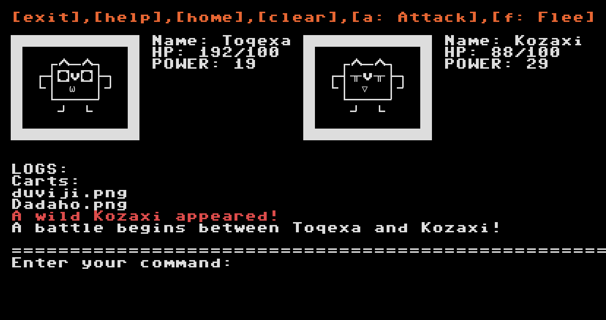
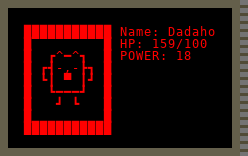

Dev Entry #1
Project: PixelBeast
Welcome to PixelBeast, a Linux CLI monster-taming game where strategy meets risk! In this command-based adventure, you'll collect, battle, and evolve unique digital creatures. Equip them with gear to enhance their abilities—but be warned, enhancing equipment comes with risks, and failure could destroy your hard-earned upgrades.
{kind=link}
Each creature is procedurally generated with its own unique look and stats, saved as PNG cartridges that you can reload into the game. While I’m still ironing out the mechanics, my goal is to create a system that emphasizes decision-making, strategy, and risk management. PixelBeast isn’t aiming to be open-world—it's a focused, tactical experience where every choice counts.
{kind=link}
One challenge I'm still figuring out is how to prevent duplication of items from cartridges, possibly with a separate storage system. But that’s a problem for later. For now, the priority is nailing down the core gameplay and expanding from there.
PixelBeast builds on ideas and components from my other projects, like Coin Chase (check it out on my itch.io!). I also want to ensure every part of this project stays modular and reusable for future improvements and extensions. Stay tuned—there’s a lot more to come, and I’m excited to get you all involved in this journey!